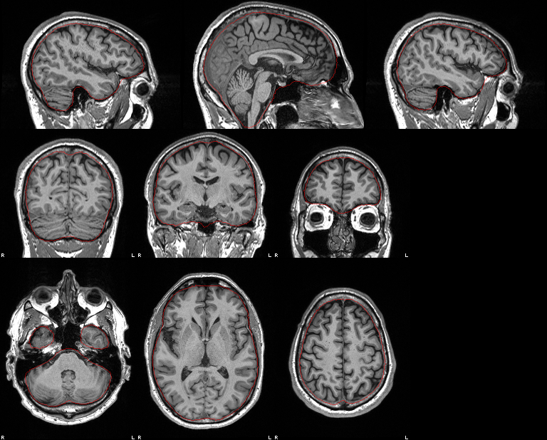
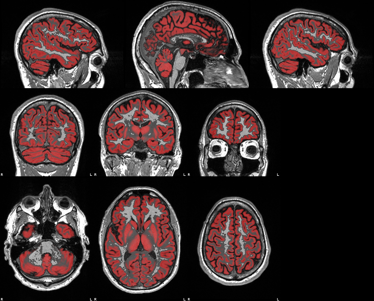
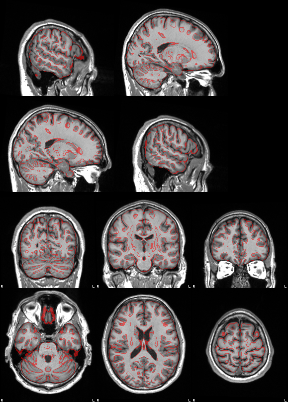
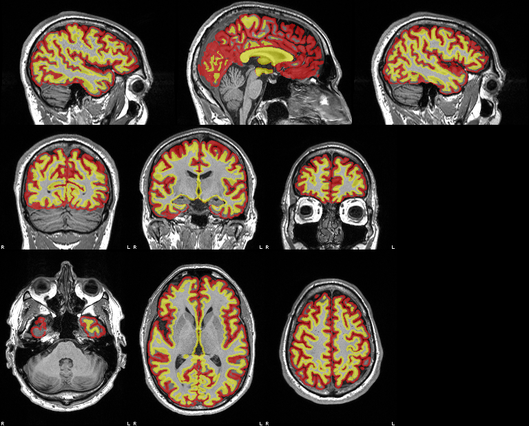
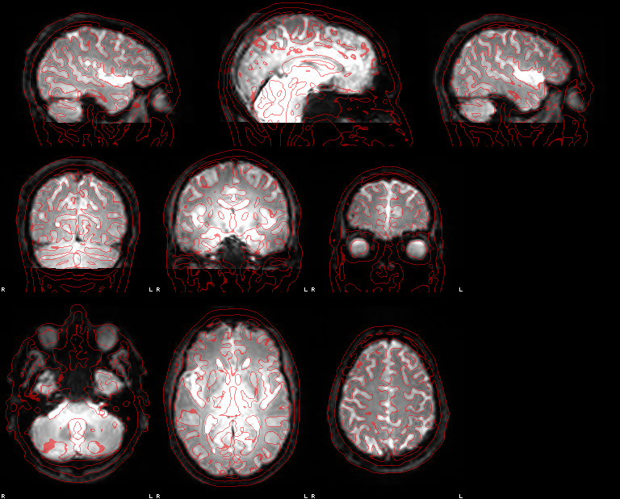
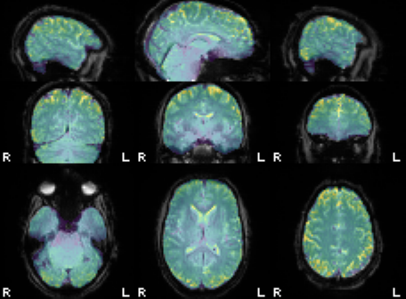
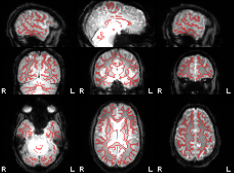
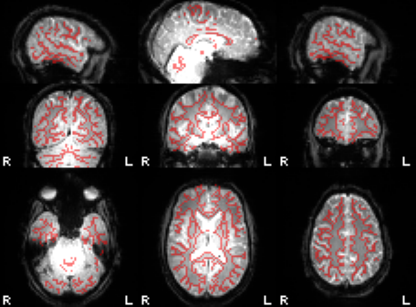
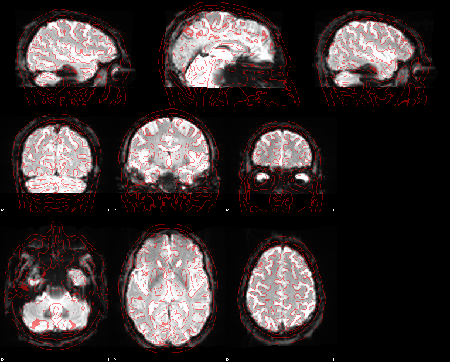
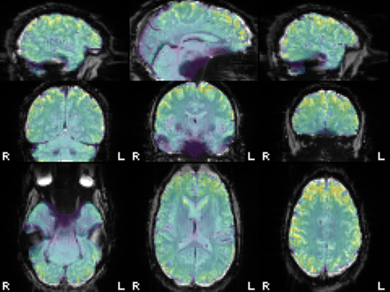

Anatomical
Brain mask

Grey matter

Normalisation to MNI152NLin2009cAsym

Cortical surfaces

Run 1: Moto
Reference and brain mask

Coregistration to T1w

Temporal SNR

Distortion correction


Run 2: Motor300s
Reference and brain mask

Coregistration to T1w

Temporal SNR

Distortion correction

Methods
Imaging procedure
Imaging data were acquired on a Siemens MAGNETOM Vida 3 T scanner (receive coil: HeadNeck_64_CS). A 3D T1-weighted anatomical image (MPRAGE) was acquired with 0.9×0.94×0.94 mm voxels, a 192×256×256 matrix, repetition time (TR) 2300 ms, echo time (TE) 2.32 ms, inversion time (TI) 900 ms, flip angle 8°, ×2 in-plane acceleration. One fMRI series (task-Moto acq-2d3echo run-03) was acquired with a multiband gradient-echo EPI (3 echoes, magnitude and phase) sequence: TR 2 s; TEs 15.2, 35.32, 55.42 ms; flip angle 45°; 76×76 matrix; 211×211 mm field of view; 46 ascending 2.8-mm-thick slices; ×2 in-plane acceleration; ×2 multiband; anterior-to-posterior phase encoding; 150 volumes. One fMRI series (task-Motor300s run-02) was acquired with a multiband gradient-echo EPI sequence: TR 2 s; TE 30 ms; flip angle 60°; 80×80 matrix; 200×200 mm field of view; 50 ascending 2.5-mm-thick slices; ×2 multiband; posterior-to-anterior phase encoding; 150 volumes.
Preprocessing
Data were preprocessed with fastprep, which follows the fMRIPrep workflow [1] using permissively licensed tools, with voxel-wise operations in niimath [2]. The T1-weighted image was cropped to a robust field of view excluding the neck (niimath implementation of FSL's robustfov [3]), corrected for intensity non-uniformity with niimath's implementation of N4 [4], brain-extracted with MindGrab [5], and segmented into grey matter, white matter and cerebrospinal fluid partial-volume maps with the brainchop MindMap model [6]; cortical surfaces were reconstructed with TopoFit [7]. It was normalised to the MNI152NLin2009cAsym template [8] with Greedy [9]: an affine brain-to-brain registration followed by a diffeomorphic (stationary velocity field) registration, both maximising normalised mutual information.
For each fMRI run, non-steady-state volumes were detected and a reference volume was computed as in fMRIPrep, and head motion was estimated by six-parameter rigid-body registration of every volume to that reference; multi-echo runs were first combined by T2*-weighted optimal combination [10]. Susceptibility distortion was handled per run (below). The corrected reference was brain-extracted with MindGrab and registered to the T1-weighted image with niimath's implementation of AFNI's 3dAllineate [11], using the local Pearson correlation cost [12] and a 12-parameter affine transform. Slice-timing correction (Fourier phase shift to the middle of each volume's acquisition) was applied to runs with slice-timing information; that reference time is recorded as StartTime in each output sidecar. Head-motion correction, distortion correction, coregistration and normalisation were composed into a single cubic B-spline interpolation, giving data in T1w space (at the functional resolution) and in MNI152NLin2009cAsym space. Confounds were computed as in fMRIPrep, including framewise displacement and DVARS [13] and anatomical and temporal CompCor components [14]. Temporal SNR was the mean divided by the residual standard deviation after regressing polynomial trends and the six motion parameters. No spatial smoothing or temporal filtering was applied.
Distortion correction for task-Moto acq-2d3echo run-03: frame-wise field maps were estimated from the multi-echo phase with MEDIC [15] (niimath implementation) and applied as per-volume voxel shifts along the phase-encoding direction, followed by a residual correction: the reference was converted to a synthetic T1-weighted image with SynthSR [16], and a diffeomorphic Greedy [9] registration of the subject's brain-extracted T1-weighted image to it (both brain-extracted with MindGrab) gave a 3D displacement field applied after coregistration.
Distortion correction for task-Motor300s run-02: a phase-difference field map (ΔTE 2.46 ms) was unwrapped with ROMEO [17], converted to a field map as FSL's fsl_prepare_fieldmap [3] (niimath implementations), registered to the reference and applied as a voxel-shift map along the phase-encoding direction [18], followed by a residual correction: the reference was converted to a synthetic T1-weighted image with SynthSR [16], and a diffeomorphic Greedy [9] registration of the subject's brain-extracted T1-weighted image to it (both brain-extracted with MindGrab) gave a 3D displacement field applied after coregistration.
References
- Esteban O, Markiewicz CJ, Blair RW, et al. fMRIPrep: a robust preprocessing pipeline for functional MRI. Nat Methods. 2019;16(1):111-116. doi:10.1038/s41592-018-0235-4
- Rorden C, Webster M, Drake C, et al. niimath and fslmaths: replication as a method to enhance popular neuroimaging tools. Aperture Neuro. 2024;4. doi:10.52294/001c.94384
- Jenkinson M, Beckmann CF, Behrens TE, Woolrich MW, Smith SM. FSL. NeuroImage. 2012;62(2):782-790. doi:10.1016/j.neuroimage.2011.09.015
- Tustison NJ, Avants BB, Cook PA, et al. N4ITK: improved N3 bias correction. IEEE Trans Med Imaging. 2010;29(6):1310-1320. doi:10.1109/TMI.2010.2046908
- Fani A, Doan M, Le I, et al. MindGrab: a spectrally-motivated architecture for accessible deep learning in neuroimaging. NeuroImage. 2026;338:122074. doi:10.1016/j.neuroimage.2026.122074
- Plis SM, Masoud M, Hu F, et al. Brainchop: providing an edge ecosystem for deployment of neuroimaging artificial intelligence models. Aperture Neuro. 2024;4. doi:10.52294/001c.123059
- Hoopes A, Iglesias JE, Fischl B, et al. TopoFit: rapid reconstruction of topologically-correct cortical surfaces. Proc Mach Learn Res. 2022;172:508-520.
- Fonov V, Evans AC, Botteron K, et al. Unbiased average age-appropriate atlases for pediatric studies. NeuroImage. 2011;54(1):313-327. doi:10.1016/j.neuroimage.2010.07.033
- Greedy diffeomorphic registration (Yushkevich PA), Rust implementation greedy-rs. https://github.com/rordenlab/greedy
- Posse S, Wiese S, Gembris D, et al. Enhancement of BOLD-contrast sensitivity by single-shot multi-echo functional MR imaging. Magn Reson Med. 1999;42(1):87-97.
- Cox RW. AFNI: software for analysis and visualization of functional magnetic resonance neuroimages. Comput Biomed Res. 1996;29(3):162-173.
- Saad ZS, Glen DR, Chen G, et al. A new method for improving functional-to-structural MRI alignment using local Pearson correlation. NeuroImage. 2009;44(3):839-848. doi:10.1016/j.neuroimage.2008.09.037
- Power JD, Barnes KA, Snyder AZ, Schlaggar BL, Petersen SE. Spurious but systematic correlations in functional connectivity MRI networks arise from subject motion. NeuroImage. 2012;59(3):2142-2154. doi:10.1016/j.neuroimage.2011.10.018
- Behzadi Y, Restom K, Liau J, Liu TT. A component based noise correction method (CompCor) for BOLD and perfusion based fMRI. NeuroImage. 2007;37(1):90-101.
- Van AN, Montez DF, Laumann TO, et al. Framewise multi-echo distortion correction for superior functional MRI. bioRxiv. 2023. doi:10.1101/2023.11.28.568744
- Iglesias JE, Billot B, Balbastre Y, et al. SynthSR: a public AI tool to turn heterogeneous clinical brain scans into high-resolution T1-weighted images for 3D morphometry. Sci Adv. 2023;9(5):eadd3607. doi:10.1126/sciadv.add3607
- Dymerska B, Eckstein K, Bachrata B, et al. Phase unwrapping with a rapid opensource minimum spanning tree algorithm (ROMEO). Magn Reson Med. 2021;85(4):2294-2308. doi:10.1002/mrm.28563
- Jezzard P, Balaban RS. Correction for geometric distortion in echo planar images from B0 field variations. Magn Reson Med. 1995;34(1):65-73.
Processing steps (67.0 s end to end)
Commands: work/commands.sh; bars: share of wall time (steps overlap).
| tool | output | s | |
|---|---|---|---|
| niimath | t1_robustfov.nii.gz | 0.1 | |
| niimath | optcom.nii.zst | 0.6 | |
| niimath | sub-20261009165449dst1312211075993_ses-1_acq-mprage_desc-preproc_T1w.nii.gz | 0.7 | |
| brainchop-mindgrab | fmapref_brain.nii.gz | 1.4 | |
| niimath | sub-20261009165449dst1312211075993_ses-1_acq-ge_run-02_desc-preproc_fieldmap.nii.gz | 0.1 | |
| niimath | sub-20261009165449dst1312211075993_ses-1_task-Moto_acq-2d3echo_run-03_part-mag_desc-hmc_boldref.nii.gz | 0.8 | |
| niimath | sub-20261009165449dst1312211075993_ses-1_task-Motor300s_run-02_desc-hmc_boldref.nii.gz | 0.5 | |
| brainchop-mindmap | pve_gm.nii.gz | 2.8 | |
| niimath | acc_csf.nii.zst | 0.7 | |
| brainchop-mindgrab | boldref_raw_brain.nii.gz | 3.1 | |
| brainchop-mindgrab | t1_brain.nii.gz | 6.5 | |
| niimath | fmap2boldref.json | 3.1 | |
| niimath | vsm.nii.zst | 0.0 | |
| niimath | boldref_fmap_sdc.nii.gz | 0.1 | |
| greedy-rs | sub-20261009165449dst1312211075993_ses-1_acq-mprage_from-T1w_to-MNI152NLin2009cAsym_mode-image_desc-affine_xfm.mat | 1.9 | |
| brainchop-mindgrab | boldref_brain.nii.gz | 1.5 | |
| niimath | medic_fieldmaps_native.nii.zst | 9.6 | |
| niimath | vsm.nii.zst | 0.4 | |
| niimath | boldref_fmap_sdc.nii.gz | 0.2 | |
| brainchop-mindgrab | boldref_brain.nii.gz | 1.5 | |
| topofit | lh.white | 23.3 | |
| greedy-rs | sub-20261009165449dst1312211075993_ses-1_acq-mprage_from-T1w_to-MNI152NLin2009cAsym_mode-image_desc-warp_xfm.nii.gz | 17.0 | |
| greedy-rs | sub-20261009165449dst1312211075993_ses-1_acq-mprage_space-MNI152NLin2009cAsym_desc-preproc_T1w.nii.gz | 0.9 | |
| greedy-rs | sub-20261009165449dst1312211075993_ses-1_acq-mprage_space-MNI152NLin2009cAsym_desc-brain_mask.nii.gz | 0.2 | |
| niimath | coreg_lpc.json | 3.3 | |
| niimath | coreg_lpc.json | 3.3 | |
| niimath | coreg_rigid.json | 5.3 | |
| niimath | coreg_rigid.json | 5.3 | |
| synthsr | synthsr.nii.gz | 3.1 | |
| brainchop-mindgrab | synthsr_brain.nii.gz | 1.4 | |
| niimath | t1brain_on_synthsr.nii.gz | 0.1 | |
| niimath | t1mask_on_synthsr.nii.gz | 0.1 | |
| niimath | synthsr_metric_mask.nii.gz | 0.1 | |
| greedy-rs | synthsr_warp.nii.gz | 3.4 | |
| niimath | sub-20261009165449dst1312211075993_ses-1_task-Motor300s_run-02_desc-coreg_boldref.nii.gz | 0.1 | |
| synthsr | synthsr.nii.gz | 8.4 | |
| brainchop-mindgrab | synthsr_brain.nii.gz | 1.4 | |
| niimath | t1brain_on_synthsr.nii.gz | 0.1 | |
| niimath | t1mask_on_synthsr.nii.gz | 0.1 | |
| niimath | synthsr_metric_mask.nii.gz | 0.1 | |
| brainchop-mindgrab | sub-20261009165449dst1312211075993_ses-1_task-Motor300s_run-02_desc-brain_mask.nii.gz | 3.0 | |
| niimath | boldref_space-T1w_synthsr.nii.zst | 0.1 | |
| greedy-rs | synthsr_warp.nii.gz | 4.4 | |
| niimath | sub-20261009165449dst1312211075993_ses-1_task-Moto_acq-2d3echo_run-03_part-mag_desc-coreg_boldref.nii.gz | 0.1 | |
| niimath | sub-20261009165449dst1312211075993_ses-1_task-Motor300s_run-02_desc-confounds_timeseries.tsv | 3.8 | |
| brainchop-mindgrab | sub-20261009165449dst1312211075993_ses-1_task-Moto_acq-2d3echo_run-03_part-mag_desc-brain_mask.nii.gz | 1.4 | |
| niimath | boldref_space-T1w_synthsr.nii.zst | 0.1 | |
| niimath | sub-20261009165449dst1312211075993_ses-1_task-Moto_acq-2d3echo_run-03_part-mag_desc-confounds_timeseries.tsv | 3.6 | |
| niimath | wm_prob.nii.zst | 0.1 | |
| niimath | wm_on_boldref.nii.zst | 0.0 | |
| python | sub-20261009165449dst1312211075993_ses-1_task-Moto_acq-2d3echo_run-03_part-mag_space-T1w_stat-t_desc-leftGreaterRight_boldmap.nii.gz | 2.3 | |
| niimath | tstat_leftGreaterRight_on_t1w.nii.zst | 0.1 | |
| niimath | tstat_rightGreaterLeft_on_t1w.nii.zst | 0.1 | |
| niimath | tstat_leftActive_on_t1w.nii.zst | 0.1 | |
| niimath | tstat_rightActive_on_t1w.nii.zst | 0.1 | |
| niimath | wm_prob.nii.zst | 0.1 | |
| niimath | wm_on_boldref.nii.zst | 0.0 | |
| python | sub-20261009165449dst1312211075993_ses-1_task-Motor300s_run-02_space-T1w_stat-t_desc-leftGreaterRight_boldmap.nii.gz | 2.7 | |
| niimath | tstat_leftGreaterRight_on_t1w.nii.zst | 0.1 | |
| niimath | tstat_rightGreaterLeft_on_t1w.nii.zst | 0.1 | |
| niimath | tstat_leftActive_on_t1w.nii.zst | 0.1 | |
| niimath | tstat_rightActive_on_t1w.nii.zst | 0.1 | |
| niimath | 22 report figures (-bitmap) | 5.8 | |
| Total | end to end | 67.0 |